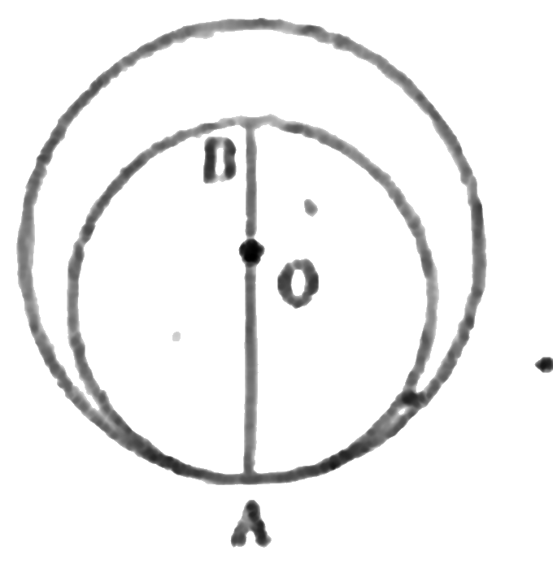

3 + xx − 3 < 0 ⇔ מונה ומכנה בסימנים הפוכים ⇒ −3 < x < 3.
מוקשים נפוצים
מונה ומכנה בסימנים הפוכים.
נבדקהפתרון תואם את מפתח התשובות של הספר.
שאלה 3
לכל מספר טבעי a הוגדרה הפעולה $(a) כך: $(a) = 1 + 2 + 3 + 4 + … + a. נתון: n מספר טבעי הגדול מ־1.
מה מהבאים נכון בהכרח?
הצגת הפתרון
התשובה הסופית3תשובה (3)$(n) − 1 > $(n − 1)
דרך הפתרון והסבר
$(n) − $(n − 1) = n > 1 ⇒ $(n) − 1 > $(n − 1).
מוקשים נפוצים
$(n) − $(n − 1) = n.
נבדקהפתרון תואם את מפתח התשובות של הספר.
שאלה 4

בסרטוט שלפניכם מעגל קטן ש־AB הוא קוטרו ו־A היא נקודת ההשקה שלו למעגל הגדול שמרכזו O. נתון: 2BO = AO.
מה היחס בין שטח המעגל הקטן לשטח האפור?
הצגת הפתרון
התשובה הסופית4תשובה (4)9:7
דרך הפתרון והסבר
AO = R, BO = R2 ⇒ AB = 1.5R ⇒ r = 0.75R. קטן: 916·πR². אפור: 716·πR² ⇒ 9 : 7.
מוקשים נפוצים
AB = 1.5R הוא קוטר המעגל הקטן.
נבדקהפתרון תואם את מפתח התשובות של הספר.
שאלה 5
מדפסת מדפיסה 6 עמודים בחצי שעה. אחת לשעתיים כורך מאגד 30 עמודים לחוברת אחת. בהנחה ו־3 מדפסות ו־2 כורכים החלו לעבוד ב־8:00 וכי יום העבודה מסתיים בשעה 20:00, כמה עמודים יוותרו ללא כריכה?